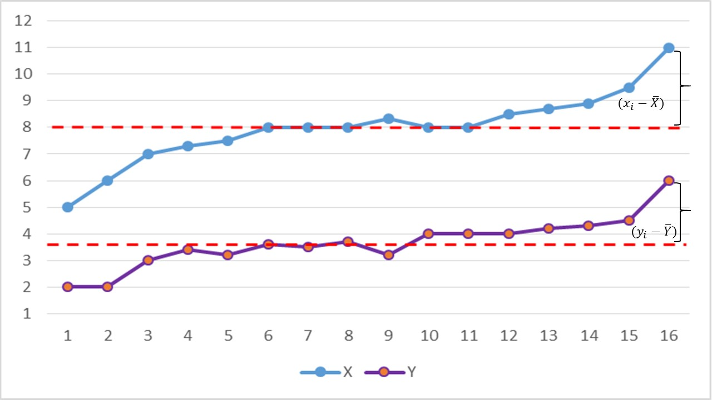
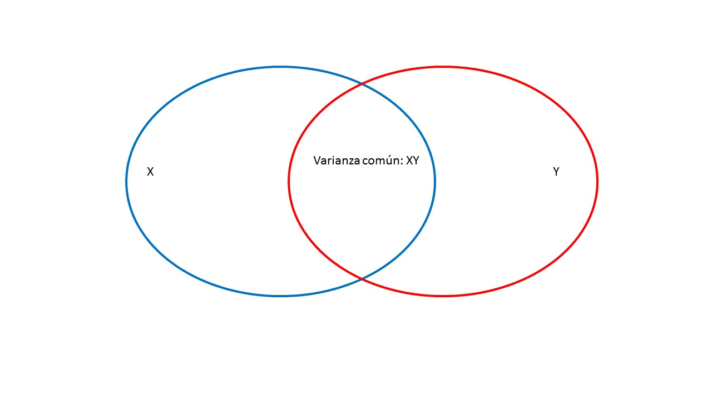
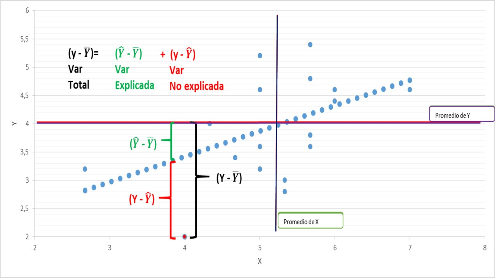

Metodologías Cuantitativas de Investigación en Psicología I
Sesión 11: Regresión Múltiple
Las medidas de asociación:
Evalúan la variación conjunta de dos variables.
Según los niveles de medición, podemos distinguir distintos tipos de medidas de asociación.
Intervalar
Ordinal
Nominal
Intervalar
Correlación Pearson
Anova
T-test / Anova
Ordinal
Anova
Chi-cuadrado
Chi-cuadrado
Nominal
T-test / Anova
Chi-cuadrado
Chi-cuadrado
Las medidas de asociación:
Considerando la correlación como la medida de asociación principal, existen varios coeficientes de correlación, según el niveles de medición.
\(r_{Pearson}\) es la versión paramétrica. Asume variables continuas y normalidad.
\(r_{Spearman}\) es una versión no paramétrica. Se usa para variables ordinales.
\(r_{PointBiserial}\) y \(r_{biserial}\) cuantifican la relación entre una variable continua y dicotómica.
\(r_{policóricas}\) es una alternativa que permite diferentes niveles de medición entre las variables (p.e. cuadracóricas, tetracóricas, policóricas)
Correlación
¿Cómo evaluar la relación entre dos variables con un niveles de medición continuo?
Por ejemplo, la relación entre el logro y recursos de los participantes.
Para evaluar esta relación:
Se midió el nivel de logro en notas
Se evaluó el nivel de Estatus
Correlación
¿Cómo evaluar si hay asociación entre éstas dos variables?
Logro (Y)
Estatus (X)
2,67
3,2
4
2
4,33
4
4,67
3,4
5
3,2
5
3,6
5
5,2
5
5,2
5
4,6
5,33
2,8
5,33
3
5,67
5,4
5,67
4,8
5,67
3,8
5,67
3,6
5,67
3,8
6
4,6
6
4,4
7
4,6
\(\bar{Y}=5,19\)
\(\bar{X}=3,96\)
Correlación
La forma más simple de ver si dos variables estan asociadas, es ver si pesentan variación conjunta, es decir covarían. Eso nos remite primero al concepto de varianza.
La varianza, como medida de dispersión, es una representación de cuanto varía un set de datos respecto de su promedio.
Por otro lado, en sentido de la variación conjunta de dos variables, se espera que cuando una variable se desvía de su promedio la otra se desvíe de su promedio de una forma similar (Field y Miles, 2014).
Correlación
Por ejemplo, una forma de representar esto puede ser la siguiente:

Correlación
Otra forma de visualizar la variación conjunta es generando un gráfico de puntos (scatterplot). Por ejemplo, si usamos los datos del ejemplo mencionado, se observa una tendencia.
El índice de correlación puede ser entendido como un indicador de varianza compartida:
\(r^2 \_{xy}\) Proporción de la varianza que comparten dos variables

Significancia de una correlación.
Una aproximación, puede ser calcular el valor t asociado al índice, con n-2 grados de libertad.
\(t_r=\frac{r\sqrt{n-2}}{\sqrt{1-r^2}}\)
Donde el \(r^2=0.20\) es la varianza compartida.
\(t_r=\frac{0.44\sqrt{19-2}}{\sqrt{1-0.20}}=2.1\)
La probabilidad asociada a \(t_r=2.1;gl=17;p=0.059\)
¿Qué pasa si modificamos el N?
Significancia de una correlación.
Una aproximación, puede ser calcular el valor t asociado al índice, con n-2 grados de libertad.
\(t_r=\frac{r\sqrt{n-2}}{\sqrt{1-r^2}}\)
Donde el \(r^2=0.20\) es la varianza compartida.
\(t_r=\frac{0.44\sqrt{30-2}}{\sqrt{1-0.20}}=2.1\)
La probabilidad asociada a \(t_r=2.60;gl=28;p=0.014\)
¿Qué pasa si modificamos el N?
En resumen:
La covarianza es una medida simple de asociación entre dos variables
El resultado de la estandarización de la covarianza es el coeficiente de correlación de Pearson.
Este coeficiente varía entre -1 a +1
En resumen:
Un coeficiente de 1 indica una asociación lineal positiva perfecta, un coeficiente de -1 indica una asociación lineal negativa perfecta y un coeficiente de 0 indica que NO hay una relación líneal.
Un criterio para evaluar el tamaño de la correlación propuesto por Cohen es: +-0.1 representa una asociación pequeña, +-0.3 representa una asociación mediana y +-0.5 representa una asociación grande.
Sin embargo,
Una correlación indica sólo asociación entre variables. No es posible identificar que variable predice la otra (Fields, 2014).
Además, se presenta el problema de la variable omitida.
donde \(Y\) es la variable dependiente, las \(X_1 \ldots X_K\) son las variables independientes, y \(\epsilon\) es el componente aleatorio.
El parámetro \(\beta_0\) es el intercepto, mientras que \(\beta_K\) es el coeficiente de regresión parcial asociado a la variable \(X_k\).
Modelo de Regresión líneal
Esto es, \(\beta_k\) mide cuanto cambia, en promedio, \(Y\) ante el cambio de una unidad de \(X_k\), manteniendo constantes todas los valores de las demás variables independientes.
Esta interpretación del “efecto marginal” se vuelve más compleja cuando hay interacciones.
La estimación de los parámetros \(\beta_k\) y \(\sigma^2\) se realiza vía MICO o ML (con el supuesto paramétrico de normalidad).
Es decir, el modelo de regresión nos entrega el valor esperado de \(Y\) condicionada a los valores dados de las \(X_k\).
Como señala Gelman y Hill, la regresión lineal es un método que resume cómo los valores esperados de una variable numerica varían entre sub-grupos de una población definidas por medio de funciones lineales de los predictores.
Supuestos de regresión Lineal
Linealidad:
La variable \(Y\) es esta asociada linealmente a las variables \(X_k\) por medio de los parémetros \(\beta_k\).
Se permiten relaciones no lineales por medio de transformaciones matemáticas de las variables.
Supuestos de regresión Lineal
Colinealidad:
Las variables dentro de la matriz \(\mathbf{X}\) son linealmente independientes.
Técnicamente, ninguna \(X_k\) es un combinación lineal de las otras \(X_k\).
Esto no implica que las distintas \(X_k\) no puedan estar correlacionadas o asociadas en forma no-lineal.
Supuestos de regresión Lineal
El valor esperado de los residuos, dado las\(X_k\), es zero.
Formalmente: \(E(\epsilon_i | X_k) = 0\)
Factores explícitamente excluidos del modelo no afectan de forma sistemática el valor medio de \(Y\).
Intuitivamente, los valores \(\epsilon_i\) positivos se cancelan con los valores \(\epsilon_i\) negativos.
Supuestos de regresión Lineal
Homocedasticidad:
Dado los valores de \(X_k\), los residuos tienen varianza constante. Esto es:
\(Var(\epsilon_i | X_k) = \sigma^2\)
En otras palabras, las varianzas condicionales de cada \(\epsilon_i\) son idénticas.
Supuestos de regresión Lineal
Homocedasticidad y Heterocedasticidad
El supuesto de homocedasticidad implica que todas las observaciones deben tener igual ponderación sobre los datos.
Cuando esto no aplica la solución es usar \(\ldots\) minimos cuadrados ordinarios ponderados.
Supuestos de regresión Lineal
Auto-correlación de los residuos
Se asume que los residuos son independientes entre s?. Dada dos observaciones \(i\) y \(j\),
Dada las \(X_k\), las desviaciones de los valores de \(Y\) de su valor medio no muestran patrones sistemáticos.
Este supuesto se rompe típicamente con datos de series temporales.
Supuestos de regresión Lineal
El modelo esta correctamente especificado.
Caso contrario pueden haber sesgos por variables omitidas o por sesgos por especificación errada.
Supuestos de regresión Lineal
Los residuos se distribuyen en forma normal. Esto es, \(\epsilon_i \backsim N(0,\sigma^2)\)
Este supuesto asegura que la distribución muestral de los coeficientes \(\beta_k\) sea normal, y por ende, permite realizar inferencia estadística.
¿Por qué? Cualquier función lineal de una variable con distribución normal también se distribuye en forma normal.
Hay algunos autores que reclaman que este supuesto no es necesario ya que el teorema central del límite asegura la distribución muestral normal de los \(\beta_k\).
Supuestos de regresión Lineal
Zero covarianza entre\(\epsilon\) y las variables \(X_{ik}\), o \(E(\epsilon_i X_{ik}) = 0\).
Indica el porcentaje de variación en \(Y\) que es explicado por el conjunto de variables independientes.
Bondad de Ajuste
Un problema del \(R^2\) es que es una función no decreciente del número de variables explicativas incluidas en el modelo.
\(\sum \epsilon_i^2\) tiende a bajar levemente aún en la presencia de variables irrelevantes.
Entonces para comparar modelos con diferente número de variables explicativas el \(R^2_A\) (\(R\) cuadrado ajustado) penaliza por la complejidad del modelo:
\[R^2_A = 1 - \frac{\sum \epsilon_i^2 / (n-k)}{\sum (Y_i - \bar{Y})^2 / (n-1)}\] - En razón de la penalización siempre \(R^2_A < R^2\).
De modo un poco más simple

Test de Hipótesis
A continuación veremos variados test de hipótesis con propósitos diferentes:
Prueba de hipótesis acerca de un coeficiente de regresión parcial individual.
Prueba de la significancia global del modelo de regresión múltiple.
Prueba de hipótesis de restricción de parámetros.
Prueba de hipótesis de un coeficiente parcial individual
Gracias al supuesto de \(\epsilon \backsim N(0, \sigma^2)\) podemos asumir que \(\hat \beta_k \backsim N(\beta_k, V(\beta_k))\)
Por defecto las hipótesis son: \(H_0:\beta_k=0 \hspace{1cm} H_A:\beta_k\neq0\)
Prueba de hipótesis de un coeficiente parcial individual
Definir nivel aceptable de error: \(\alpha=0.05\) y valor crítico asociado \(t_{\alpha/2}\).
Contrastar valor \(t\) con valor crítico usando una curva normal o \(t\) de student (para muestras pequeñas) al nivel determinado de \(\alpha\).
Si valor \(t>t_{\alpha/2}\) no se acepta (o se rechaza) la \(H_0\).
Prueba de hipótesis de un coeficiente parcial individual
Alternativamente, se puede calcular directamente el valor p asociado al estadístico \(t\) y ver si es mayor o menor a nivel aceptable de error.
Interpretación: Un \(valor\ p = 0.02\) indica que asumiendo que \(H_0:\beta_k=0\) es verdadera, la probabilidad de observar un valor igual o mayor al estadístico \(t\) por simple azar es de un 2%.
Intervalos de Confianza
Como alternativa a una prueba de hipótesis se pueden calcular los intervalos de confianza de un \(\hat\beta_k\). Equivale a: \(\hat\beta_k - t_{\alpha/2} \sqrt{V(\hat\beta_k)} \leq \hat\beta_k \leq \hat\beta_k + t_{\alpha/2} \sqrt{V(\hat\beta_k)}\)
¿Qué significa que los intervalos incluyan el valor 0?
Interpretación: Si obtuviéramos infinitas muestras equivalentes esperamos que el \(\beta_k\) (verdadero valor poblacional) este incluido en los intervalos en un 95% de las veces.
Prueba Significancia Global del Modelo
Este prueba es comúnmente realizada, y reportada por defecto en muchos programas estadísticos.
Consiste en evaluar si el efecto conjunto de todos los coeficientes incluidos en un modelo son significativos.
Una variable aleatoria que sea una razón entre dos variables aleatorias con distribución \(\chi^2\) (con grados de libertad \(d_1\) y \(d_2\)), sigue una distribución \(F\) con grados de libertad \(d_1\) y \(d_2\).
La significancia se evalúa obteniendo el \(p_{value}\) asociado a un \(t_{N-1}\).
2*pt(-abs(-4.933),df=103-1-1)
[1] 3.193406e-06
Significancia de los coeficientes
Intervalo de confianza \(\beta_1 +- t_{(\alpha/2, df)}*S_{\beta_a}\)
Requiere buscar valot t asociado a un nivel de confianza (p.e. 0.05 ó 95 por ciento de confianza) para los grados de libertad respectivos, en tabla de valores \(t(0.025, 101)=-1.984\)
\(-0.666 +- (-1.98*0.135)\)
\(-0.93 < -0.666 > -0.40\)
Significancia de los coeficientes
Interpretación: So obtuvieramos infinitas muestras equivalentes esperamos que el \(\beta_1=-0.666\) (verdadero en la población) es incluido en los intervalos en un 95 por ciento de las veces.
¿Qué significa que los intervalos incluyan el valor 0?
Ejemplo
Interprete los resultados del modelo:
Dependent variable:
Ansiedad
-0.666*** (0.135)
-0.485** (0.191)
Revisar
0.241 (0.180)
Constant
106.071*** (10.285)
87.833*** (17.047)
Observations
103
103
R2
0.194
0.209
Adjusted R2
0.186
0.193
F Statistic
24.384*** (df = 1; 101)
13.184*** (df = 2; 100)
Note:
*p<0.1; **p<0.05; ***p<0.01
Una pequeña extensión: uso de dummy (categóricas)
Para capturar relaciones no lineales o evaluar el efecto de variable dicotomicas, es posible usar dummys en un modelo de regresión:
Estas variables no indican cierta posible magnitud o cantidad de una variable, sino básicamente la presencia o ausencia de algún atributo o característica.
Por definición las variables dummy son binarias, es decir, pueden tomar dos posibles valores.
Coeficientes estandarizados
Estandarización de coeficientes:
\(\beta_1= \hat{\beta}{\frac{s_x}{s_y}}\)
Permite comparar coeficientes en términos de la predicción relativa independientemente de las escalas originales (si la escala es la misma, se pueden comparar directamente).
Equivale a la regresión realizada con las variables estandarizadas.
Los coeficientes estandarizados se interpretan como el número de desviaciones estándar de Y según una desviación estándar de X
Sin embargo, esto tiene algunas limitaciones:
Los coeficientes tienen un significado menos intuitivo
No aplicable a variables categóricas (dummy). La estandarización es diferente para cada grupo.
Coeficientes estandarizados
Estandarización de coeficientes:
\(\beta_1= \hat{\beta}{\frac{s_x}{s_y}}\)
Dependent variable:
Ansiedad
-0.485** (0.191)
Revisar
0.241 (0.180)
Constant
87.833*** (17.047)
Observations
103
Note:
*p<0.1; **p<0.05; ***p<0.01
Ansiedad Revisar -0.3211 0.1689
Descomposición de la varianza
La varianza de \(Y_i\) puede descomponerse entonces como:
El \(R^2\) es utilizado ampliamente como un indicador de Bondad de ajuste. Este indica el porcentaje (proporción) de variación de \(Y\) explicada por el conjunto de variables independientes.
\(R^2=\frac{SS_{reg}}{SS_{tot}}\)
Tiende a aumentar con el ingreso de variables (incluso ante variables irrelevantes)
Para corregir por esto, usualmente se reporta el \(R^2\) ajustado, que penaliza por la cantidad de predictores adicionales
Por medio de este test se pueden establecer comparaciones que impliquen restricciones especificas a los modelos.
Evaluar si un predictor específico mejora el modelo o hipótesis acerca de un predictor específico.
Por ejemplo: \(H_0= \beta_1=\beta_2=0\)
Comparación de modelos
La forma más general implica definir dos modelos: Modelo completo y modelo restringido.
Se estiman los modelos definidos. El modelo completo con F \(gl=n-k-1\) y el modelo restringido con F \(gl=(n-k-1)-m\), siendo m el número de parametros restringidos.
Comparación de modelos
anova(reg1,reg2)
Analysis of Variance Table
Model 1: Rendimiento ~ Ansiedad
Model 2: Rendimiento ~ Ansiedad + Revisar
df
SS
Delta df
Delta SC
F
P value
1
101
55289
2
100
54316
1
973.28
1.79
0.1837
Una pequeña extensión: uso de dummy (categóricas)
Como práctica generalizada se emplea el 1 para indicar la presencia de cierto atributo, y 0 su ausencia
Ejemplos: hombre/mujer, casado/no casado, religioso/no religioso, ocupado/desempleado, etc.
En estas situaciones se pueden crear \(m-1\) variables donde \(m\) es el numero de categorías que puede tomar la variable en cuestión, e introducirlas en el modelo de regresión.